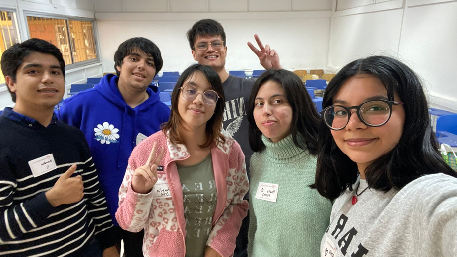
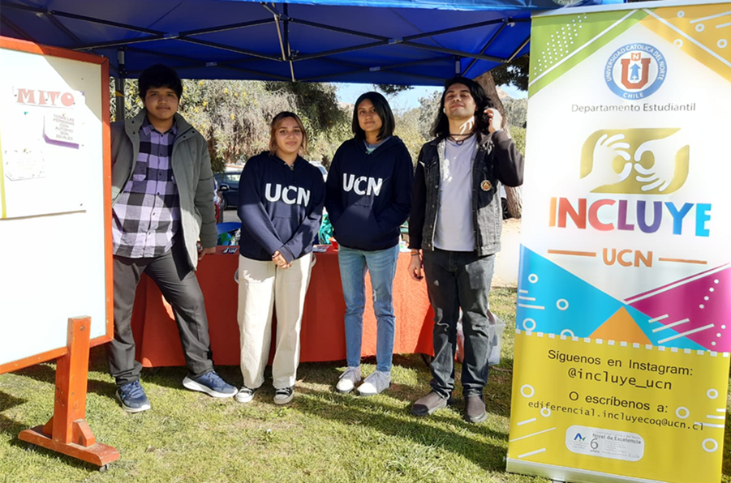

COMUNIDAD UCN
Uso correcto del vocabulario
Voluntariados
Antofagasta
El voluntariado de inclusión tiene como objetivo fomentar una cultura inclusiva dentro de la UCN, pudiendo generar espacios seguros para compartir y aprender sobre la temática de discapacidad e inclusión. En esta iniciativa participan tanto estudiantes con o sin discapacidad.
Contacto

voluntarios.incluye.afta@ucn.cl
Coquimbo
El voluntariado por la inclusión de la Sede Coquimbo, tiene como principal objetivo concientizar a la comunidad respecto a la inclusión desde el punto de vista de la discapacidad, contribuyendo a generar una cultura más inclusiva.
Contacto
@voluntariado.incluye.ucn
Oferta de talleres que puedes participar
Encuentros Incluye UCN
Los “Encuentros Incluye UCN” corresponden a instancias colectivas temáticas, principalmente entre estudiantes del programa, voluntari@s, el equipo profesional y estudiantes de la comunidad UCN. Estos tienen el objetivo de brindar espacios recreativos y de interacción, fomentando conversaciones interactivas, intercambiando experiencias y compartiendo intereses en común. Las temáticas son elegidas por el estudiantado y pueden ser variadas, por ejemplo: Jugar juegos de mesa, videojuegos, conversar sobre la vida universitaria, las amistades, entre otros temas.
Encontrémonos sede Coquimbo
Estos encuentros son desarrollados durante el espacio Encuéntrate UCN, una vez al mes y son organizados por el Programa Incluye UCN en conjunto con el Programa AORA. En cada uno de ellos los estudiantes del programa y voluntarios/as, tiene la posibilidad de participar de talleres donde se abordan temáticas relacionadas con autocuidado, ámbito educativo, recreativas, entre otras; constituyéndose en una espacio para compartir experiencias, intercambiar ideas e intereses.